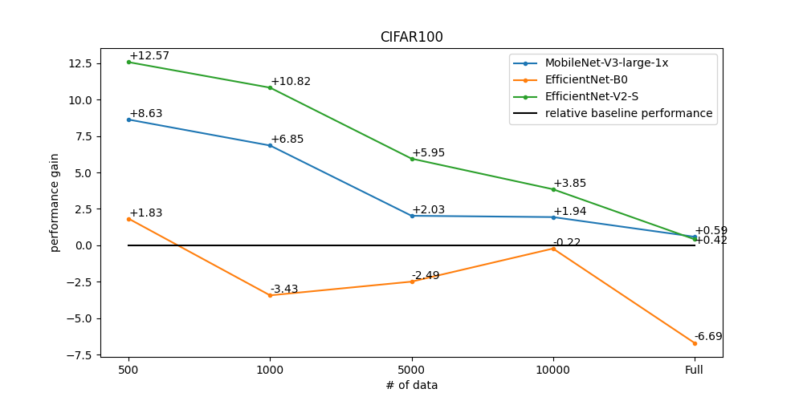
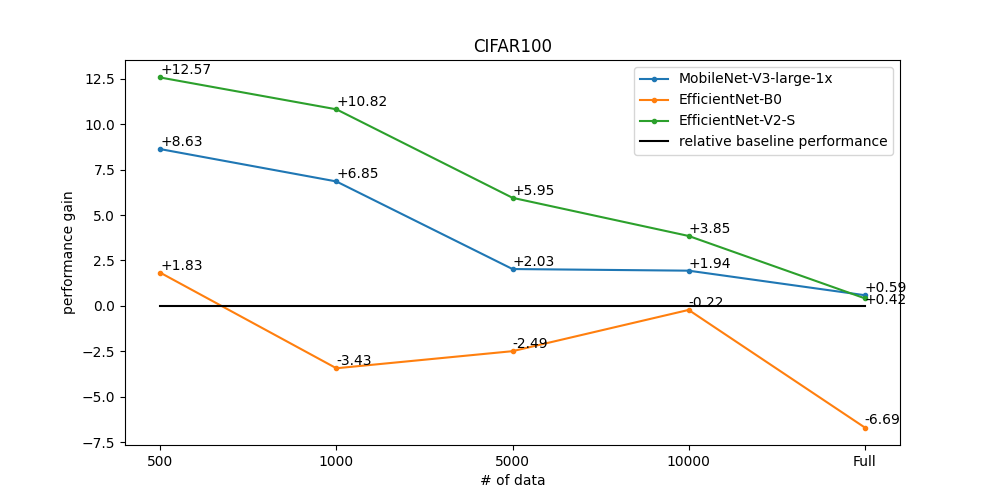

Multi-class Classification¶
Multi-class classification is the problem of classifying instances into one of two or more classes. We solve this problem in a common fashion, based on the feature extractor backbone and classifier head that predicts the distribution probability of the categories from the given corpus. For the supervised training we use the following algorithms components:
Augmentations: Besides basic augmentations like random flip and random rotate, we use Augmix. This advanced type of augmentations helps to significantly expand the training distribution.Optimizer: Sharpness Aware Minimization (SAM). Wrapper upon the SGD optimizer that helps to achieve better generalization minimizing simultaneously loss value and loss sharpness.Learning rate schedule: Cosine Annealing. It is a common learning rate scheduler that tends to work well on average for this task on a variety of different datasets.Loss function: We use standart Cross Entropy Loss to train a model. However, for the class-incremental scenario we use Influence-Balanced Loss. IB loss is a solution for class-imbalance, which avoids overfitting to the majority classes re-weighting the influential samples.Training techniqueNo Bias Decay (NBD): To add adaptability to the training pipeline and prevent overfitting.
Early stopping: To add adaptability to the training pipeline and prevent overfitting. You can use early stopping like the below command.$ otx train {TEMPLATE} ... \ params \ --learning_parameters.enable_early_stopping=True \ # is early stopping used --learning_parameters.early_stop_start=3 \ # the number of epochs (iters) in which early stopping proceeds --learning_parameters.early_stop_patience=8 \ # (for epoch runner) stop if the model don't improve within the number of epochs of patience --learning_parameters.early_stop_iteration_patience=8 \ # (for iter runner) stop if the model don't improve within the number of iterations of patienceBalanced Sampler: To create an efficient batch that consists of balanced samples over classes, reducing the iteration size as well.
Supervised Contrastive Learning (SupCon): To enhance the performance of the algorithm in case when we have a small number of data. More specifically, we train a model with two heads: classification head with Influence-Balanced Loss and contrastive head with Barlow Twins loss. It enables using –learning_parameters.enable_supcon=True in CLI. The below table shows how much performance SupCon improved compared with baseline performance on three baseline datasets with 10 samples per class: CIFAR10, Eurosat-10, and Food-101.
Model name
CIFAR10
Eurosat-10
Food-101
SL
SupCon
SL
SupCon
SL
SupCon
MobileNet-V3-large-1x
55.06
58.88
77.60
78.70
34.83
34.38
EfficientNet-B0
42.81
46.35
66.87
70.23
37.26
39.17
EfficientNet-V2-S
59.78
63.13
81.84
83.12
51.32
54.84
You can use SupCon training like the below command.
$ otx train {TEMPLATE} ... \ params \ --learning_parameters.enable_supcon=True
Dataset Format¶
We support a commonly used format for multi-class image classification task: imagenet class folder format. This format has the following structure:
data
├── train
├── class 0
├── 0.png
├── 1.png
...
└── N.png
├── class 1
├── 0.png
├── 1.png
...
└── N.png
...
└── class N
├── 0.png
├── 1.png
...
└── N.png
└── val
...
Note
Please, refer to our dedicated tutorial for more information how to train, validate and optimize classificaiton models.
Models¶
We support the following ready-to-use model templates:
Template ID |
Name |
Complexity (GFLOPs) |
Model size (MB) |
|---|---|---|---|
MobileNet-V3-large-1x |
0.44 |
4.29 |
|
EfficientNet-B0 |
0.81 |
4.09 |
|
EfficientNet-V2-S |
5.76 |
20.23 |
EfficientNet-V2-S has more parameters and Flops and needs more time to train, meanwhile providing superior classification performance. MobileNet-V3-large-1x is the best choice when training time and computational cost are in priority, nevertheless, this template provides competitive accuracy as well. EfficientNet-B0 consumes more Flops compared to MobileNet, providing better performance on large datasets, but may be not so stable in case of a small amount of training data.
Besides this, we support public backbones from torchvision, pytorchcv, mmcls and OpenVino Model Zoo. Please, refer to the tutorial how to customize models and run public backbones.
To see which public backbones are available for the task, the following command can be executed:
$ otx find --backbone {torchvision, pytorchcv, mmcls, omz.mmcls}
In the table below the top-1 accuracy on some academic datasets using our supervised pipeline is presented. The results were obtained on our templates without any changes. We use 224x224 image resolution, for other hyperparameters, please, refer to the related template. We trained each model with single Nvidia GeForce RTX3090.
Model name |
CIFAR100 |
cars |
flowers |
pets |
SVHN |
|---|---|---|---|---|---|
MobileNet-V3-large-1x |
N/A |
N/A |
N/A |
N/A |
N/A |
EfficientNet-B0 |
N/A |
N/A |
N/A |
N/A |
N/A |
EfficientNet-V2-S |
N/A |
N/A |
N/A |
N/A |
N/A |
Semi-supervised Learning¶
Semi-SL (Semi supervised Learning) is a type of machine learning algorithm that uses both labeled and unlabeled data to improve the performance of the model. This is particularly useful when labeled data is limited, expensive or time-consuming to obtain.
FixMatch is a specific implementation of Semi-SL that has been shown to be effective in various applications. FixMatch introduces pseudo-labeling, which is the process of generating labels for the unlabeled data and treating them as if they were labeled data. Pseudo-labeling is based on the idea that the model’s prediction for the unlabeled data is likely to be correct, which can improve the model’s accuracy and reduce the need for labeled data.
In Semi-SL, the pseudo-labeling process is combined with a consistency loss that ensures that the predictions of the model are consistent across augmented versions of the same data. This helps to reduce the impact of noisy or incorrect labels that may arise from the pseudo-labeling process. Additionally, Our algorithm uses a combination of strong data augmentations and a specific optimizer called Sharpness-Aware Minimization (SAM) to further improve the accuracy of the model.
Overall, OTX Semi-SL are powerful techniques for improving the performance of machine learning models with limited labeled data. They can be particularly useful in domains where labeled data is expensive or difficult to obtain, and can help to reduce the time and cost associated with collecting labeled data.
Pseudo-labeling (FixMatch): A specific implementation of Semi-SL that combines the use of pseudo-labeling with a consistency loss, strong data augmentations, and a specific optimizer called Sharpness-Aware Minimization (SAM) to improve the performance of the model.Adaptable Threshold: A novel addition to our solution that calculates a class-wise threshold for pseudo-labeling, which can solve the issue of imbalanced data and produce high-quality pseudo-labels that improve the overall score.Unlabeled Warm Up Loss: A technique for preventing the initial unstable learning of pseudo-labeling by increasing the coefficient of the unlabeled loss from 0 to 1.Exponential Moving Average (EMA): A technique for maintaining a moving average of the model’s parameters, which can improve the generalization performance of the model.Other solutions: Other than that, we use several solutions that apply to supervised learning (No bias Decay, Augmentations, etc.).
Please, refer to the tutorial how to train semi supervised learning. Based on MobileNet-V3-large-1x, it takes about 3 times longer than conventional supervised learning.
In the table below the top-1 accuracy on some academic datasets using our pipeline is presented. Same as the supervised setting except for an image for unlabeled and an additional batch size.
4 images per class (+ unlabeled image for Semi-SL)
Dataset |
CIFAR10 |
SVHN |
FMNIST |
|||
|---|---|---|---|---|---|---|
SL |
Semi-SL |
SL |
Semi-SL |
SL |
Semi-SL |
|
MobileNet-V3-large-1x |
40.75 |
43.13 |
23.32 |
27.85 |
68.2 |
71.84 |
EfficientNet-B0 |
42.24 |
44.23 |
28.09 |
32.96 |
68.58 |
70.79 |
EfficientNet-V2-S |
36.03 |
39.66 |
16.81 |
20.28 |
65.99 |
69.61 |
10 images per class (+ unlabeled image for Semi-SL)
Dataset |
CIFAR10 |
SVHN |
FMNIST |
|||
|---|---|---|---|---|---|---|
SL |
Semi-SL |
SL |
Semi-SL |
SL |
Semi-SL |
|
MobileNet-V3-large-1x |
50.77 |
52.16 |
38.73 |
48.36 |
73.33 |
77.04 |
EfficientNet-B0 |
52.69 |
58.35 |
46.04 |
61.79 |
74.56 |
80.14 |
EfficientNet-V2-S |
48.84 |
55 |
26.16 |
47.99 |
74.6 |
80.92 |
Note
This result can vary greatly depending on the image selected for each class. Also, since there are few labeled settings for the Semi-SL algorithm, Some models may require larger datasets for better results.
Self-supervised Learning¶
Self-supervised learning can be one of the solutions if the user has a small data set, but label information is not yet available. General self-supervised Learning in academia is commonly used to obtain well-pretrained weights from a source dataset without label information. However, in real-world industries, it is difficult to apply because of small datasets, limited resources, or training in minutes.
For these cases, OTX provides improved self-supervised learning recipes that can be applied to the above harsh environments. We adapted BYOL as our self-supervised method. Users only need a few more minutes to use these self-supervised learning recipes and can expect improved performance, especially in low-data regimes.
Below is graphs of performance improvement for three baseline datasets: CIFAR10, CIFAR100, and Food-101. The graphs below show how much performance improvement over baseline was achieved using our self-supervised learning recipes. In particular, the smaller the data, the greater the performance improvement can be expected.
 

{kind=link}

You can use Self-supervised learning like the below command.
$ otx train {TEMPLATE} ... \
params \
--algo_backend.train_type=SELFSUPERVISED
Incremental Learning¶
To be added soon